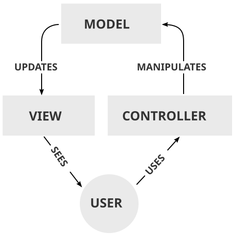

En la versió més simple:
Per exemple, en un joc on-line, el controlador informa al model de les accions que ha fet l'usuari amb el teclat i/o el ratolí, el model actualitza les dades del joc i les enviaria a tots als usuaris per actualitzar la vista.
Si el joc utilitza un temporitzador per animar la pantalla, el controlador notifica quan cal redibuixar la pantalla al model i aquest envia les dades necessària la vista.

Una versió que pot ser més adequada en determinats escenaris és la següent:
En aquest cas, el controlador fa de pont entre la vista i el model.
D'aquesta forma, el model pot ser més independent de la vista.
En un entorn gràfic, les finestres i els seus components són objectes que poden reaccionar a les accions que els usuaris poden fer en qualsevol moment.
Per gestionar aquestes accions es creen altres objectes (listeners) que reben les accions i les comuniquen al model, que pot notificar directament els canvis a la vista (segons el primer model), o respondre al controlador que serà qui indiqui a la vista que s'ha d'actualitzar (segons el segon esquema).
public class Controlador implements ActionListener {
@Override
// Acció quan es clica el botó
public void actionPerformed(ActionEvent e) {
// Modificar el comptador
Model.incrementar();
}
}
public class Model {
// Valor del comptador
private static int comptador = 0;
// Incrementar el valor del comptador i mostrar-lo
public static void incrementar() {
++comptador;
Vista.setComptador("" + comptador);
}
}
public class Vista extends JFrame {
private static JLabel comptador;
// Constructor de la finestra
public Vista() {
Container panell = getContentPane();
// Etiqueta on escriure el valor del comptador
comptador = new JLabel();
comptador.setPreferredSize(new Dimension(100, 30));
comptador.setHorizontalAlignment(SwingConstants.CENTER);
// Botó per incrementar el comptador i controlador
JButton iButton = new JButton("Incrementar");
Controlador ctrl = new Controlador();
iButton.addActionListener(ctrl);
// Afegir l'etiqueta i el botó a la finestra
panell.add(comptador, BorderLayout.PAGE_START);
panell.add(iButton, BorderLayout.PAGE_END);
pack();
setVisible(true);
setDefaultCloseOperation(EXIT_ON_CLOSE);
}
// Actualitzar el comptador
public static void setComptador(String c) {
comptador.setText(c);
}
public static void main(String[] args) {
new Vista();
Vista.setComptador("0");
}
}
Si hi ha més d'una vista, per exemple en un programa que mostra una vista 2D i una vista 3D del mateix objecte, és preferible que el model pugui accedir a les dues vistes o utilitzar la comunicació a través del controlador, en comptes d'accedir a la vista a través de mètodes estàtics.
En aquest exemple, la comunicació del controlador cap a la vista es fa utilitzant l'objecte finestra i un mètode no estàtic (com que només hi ha una vista, es podria haver fet utilitzant un mètode estàtic).
En el constructor del Controlador cal passar-li un objecte de la classe Vista.
public class Controlador implements ActionListener {
private final Vista finestra;
// Constructor del controlador
public Controlador(Vista f) {
finestra = f;
}
@Override
// Acció quan es clica el botó
public void actionPerformed(ActionEvent e) {
// Obtenir el nou valor
int valor = Model.incrementar();
// Mostrar el nou valor
finestra.setComptador("" + valor);
}
}
public class Model {
// Valor del comptador
private static int comptador = 0;
// Incrementar el valor del comptador i retornar-lo
public static int incrementar() {
return ++comptador;
}
}
public class Vista extends JFrame {
private final JLabel comptador;
// Constructor de la finestra
public Vista() {
Container panell = getContentPane();
// Etiqueta on escriure el valor del comptador
comptador = new JLabel();
comptador.setPreferredSize(new Dimension(100, 30));
comptador.setHorizontalAlignment(SwingConstants.CENTER);
// Botó per incrementar el comptador i controlador
JButton iButton = new JButton("Incrementar");
Controlador ctrl = new Controlador(this);
iButton.addActionListener(ctrl);
// Afegir l'etiqueta i el botó a la finestra
panell.add(comptador, BorderLayout.PAGE_START);
panell.add(iButton, BorderLayout.PAGE_END);
pack();
setVisible(true);
setDefaultCloseOperation(EXIT_ON_CLOSE);
}
// Actualitzar el comptador
public void setComptador(String c) {
comptador.setText(c);
}
public static void main(String[] args) {
Vista finestra = new Vista();
finestra.setComptador("0");
}
}
De vegades, la classe Model es dissenya sense mètodes ni atributs estàtics (s'ha de crear com a objecte).
En aquest cas, al constructor del controlador se li ha de passar l'objecte model a més de l'objecte vista.